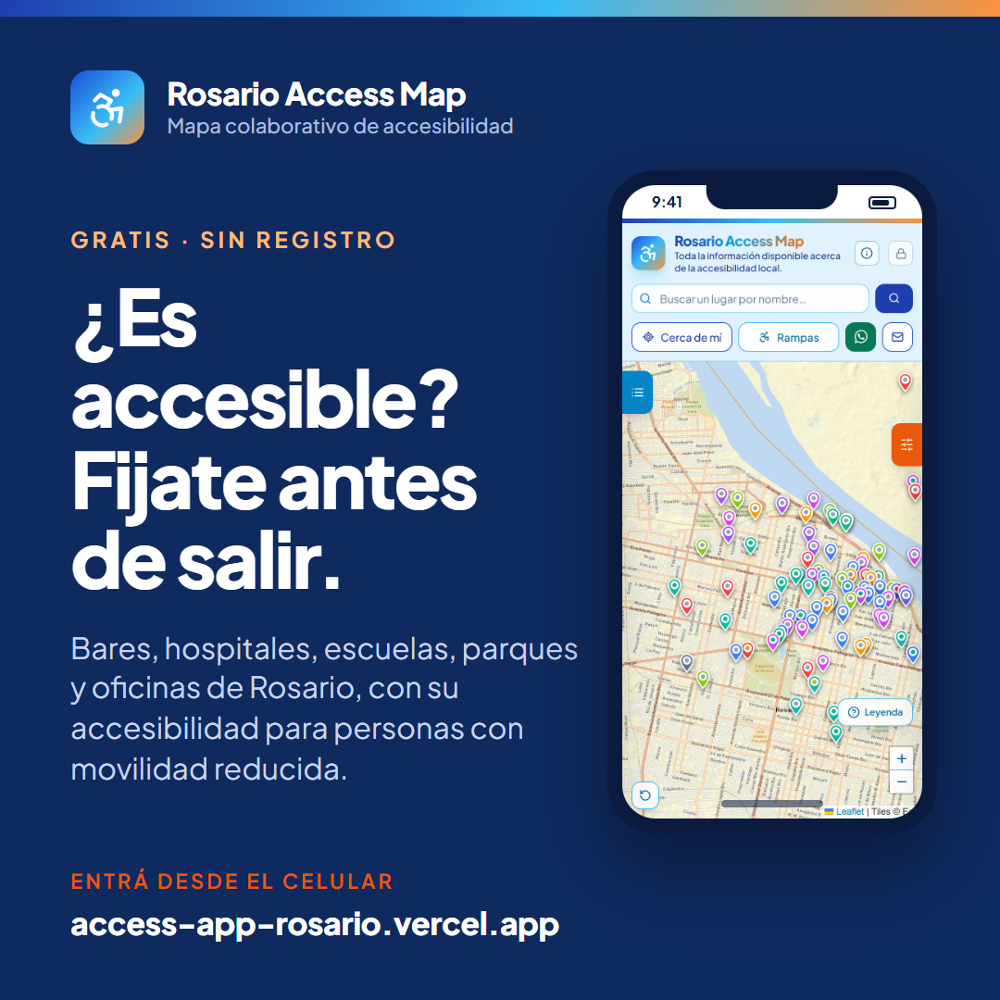
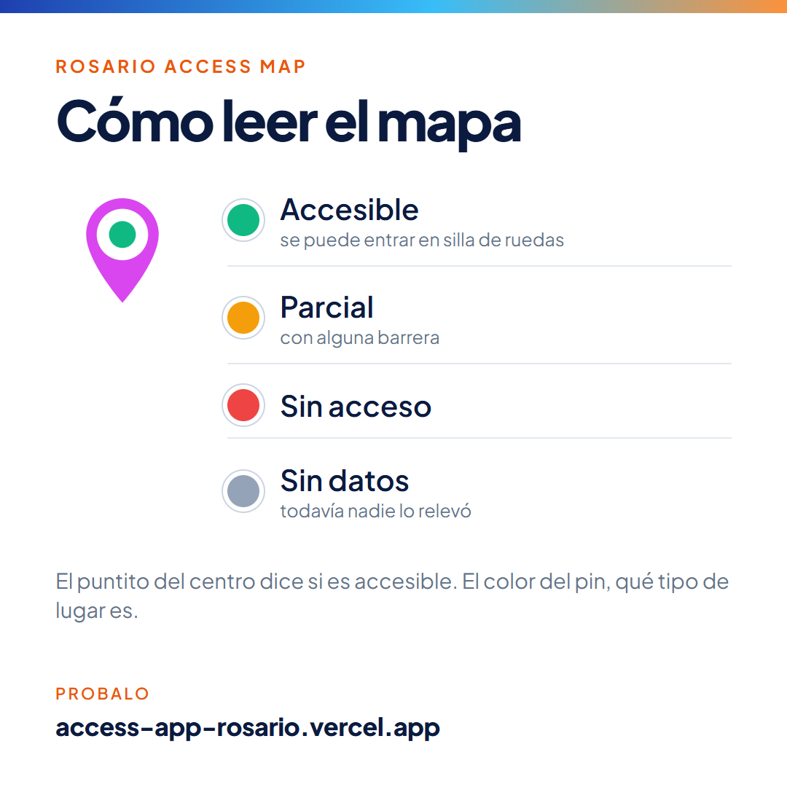
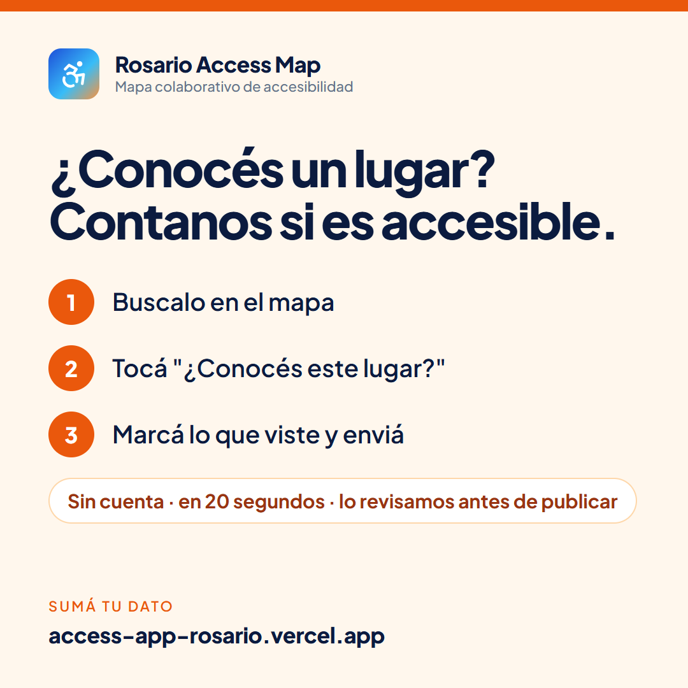
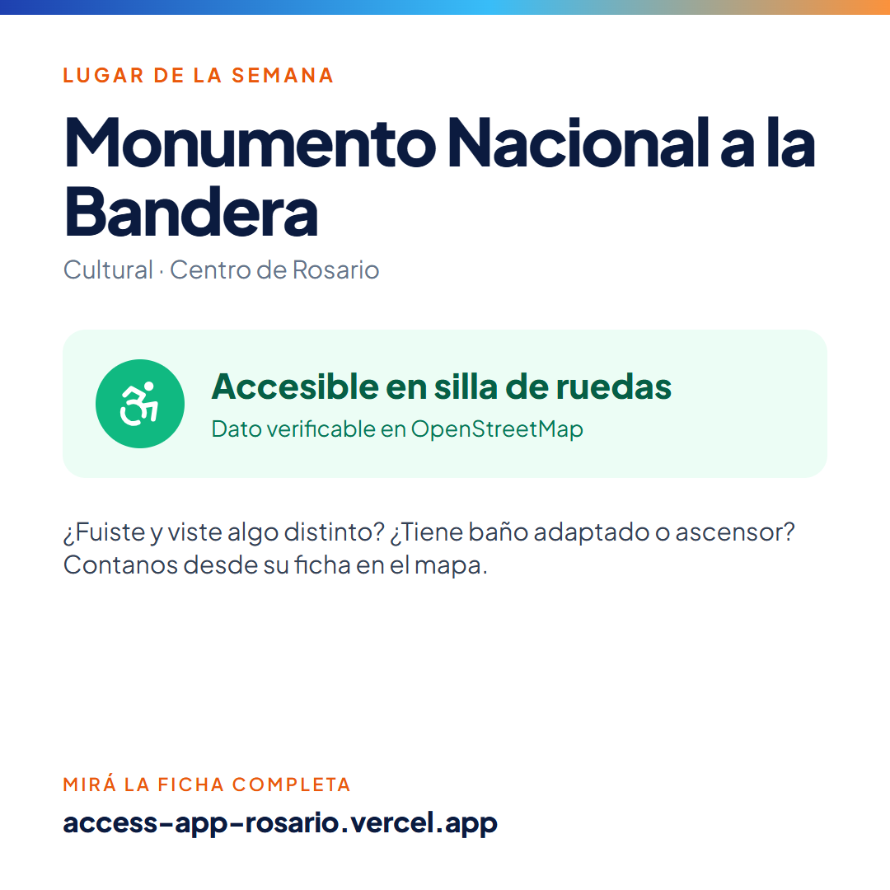

Redes sociales y presencia en internet: quién hace qué, qué se publica, con qué textos, cómo conseguir que otros sitios nos enlacen y cómo se mide si funciona.

El mapa sirve si la gente lo conoce y si se llena de datos. La difusión tiene dos objetivos: que más personas lo usen antes de salir de casa y que más personas carguen lo que saben de cada lugar.
Datos reales de los últimos 30 días (Vercel Analytics, al 9 de octubre de 2026):
| Qué | Hoy | Lectura |
|---|---|---|
| Visitantes en 30 días | 11 | Prácticamente sin difusión todavía. |
| Páginas vistas en 30 días | 41 | Quien entra, recorre: casi 4 páginas por persona. |
| Visitas desde el celular | 82 % | Todo el contenido tiene que pensarse para el teléfono. |
| Llegadas desde Google | 2 | Google ya muestra la página, pero casi nadie la busca: falta que otros sitios la enlacen. |
| Lugares con dato de acceso | 24 de 96 | Hay mucho para sumar: es el mejor motivo para pedir ayuda. |
Son una propuesta para medir el avance: el responsable del proyecto las ajusta al terminar el primer mes.
| Meta | Hoy | A los 3 meses |
|---|---|---|
| Visitantes por mes | 11 | 500 |
| Llegadas desde Google por mes | 2 | 100 |
| Lugares con dato de acceso | 24 de 96 | 60 de 96 |
| Sugerencias del público por mes | sin medir | 30 |
| Sitios que enlazan al mapa | 0 | 10 |
| Seguidores en Instagram | sin cuenta | 500 |
La difusión se puede repartir entre varias personas. Ninguno de estos roles necesita conocimientos técnicos.
| Rol | Qué hace | Tiempo |
|---|---|---|
| Responsable de redes | Publica según el calendario, responde mensajes y comentarios, y completa la tabla de medición cada mes. | 3 horas por semana |
| Creador de contenido | Saca fotos y datos en los lugares para el "Lugar de la semana" y graba videos cortos de la app. Puede ser un relevador (ver la guía, sección 5). | 2 horas por semana |
| Vínculos | Contacta organizaciones, medios, universidades y el municipio, y consigue que enlacen el mapa (sección 8). | 2 horas por semana |
| Responsable del proyecto | Aprueba el tono y las piezas, es dueño de las cuentas de redes y revisa las metas una vez por mes. | 1 hora por mes |
Las cuentas de redes se crean con un mail del proyecto o de la empresa, nunca con el personal de quien las maneja, y la contraseña la guarda el responsable del proyecto. Así nadie se lleva la cuenta si deja el equipo.
Un solo mensaje central, adaptado a cada público.
Antes de salir, fijate si el lugar es accesible. Rosario Access Map es un mapa gratuito, sin registro y hecho en Rosario, que muestra qué tan accesibles son los lugares de la ciudad. Es colaborativo: cualquiera puede sumar lo que sabe y el equipo lo revisa antes de publicarlo.
| Público | Qué le importa | Qué le pedimos |
|---|---|---|
| Personas con discapacidad o movilidad reducida, y sus familias | Saber antes de ir si van a poder entrar, si hay baño adaptado, cómo llegar. | Que lo usen, lo guarden en el celular y cuenten lo que ven. |
| Bares, comercios y lugares del mapa | Que los elijan; mostrar que son accesibles. | Que confirmen sus datos y compartan su ficha. |
| Organizaciones e instituciones | Herramientas útiles para la gente con la que trabajan. | Que lo difundan, lo enlacen y sumen relevadores. |
| Medios de Rosario | Historias locales con impacto. | Una nota sobre el proyecto. |
| Estudiantes y voluntarios | Participar en algo concreto. | Sumarse a las salidas de relevamiento. |
Cada canal lleva su propio enlace. Todos abren el mapa normal, pero así se puede medir de dónde llega cada visita (sección 9).
| Canal | Uso | Enlace |
|---|---|---|
| Canal principal: posts, historias y videos cortos. | access-app-rosario.vercel.app/ig | |
| Página propia y grupos de Rosario (barrios, discapacidad, familias). | access-app-rosario.vercel.app/fb | |
| Estados, contactos y grupos de organizaciones. | access-app-rosario.vercel.app/wa | |
| Perfil de la empresa: el proyecto como acción de inclusión. | access-app-rosario.vercel.app/li | |
| TikTok (opcional) | Los mismos videos cortos de Instagram. | access-app-rosario.vercel.app/tt |
| Folleto impreso | El código QR del folleto ya lleva este enlace. | access-app-rosario.vercel.app/qr |
| Mails | Contactos con organizaciones y medios. | access-app-rosario.vercel.app/mail |
Usuario sugerido: @rosarioaccessmap (verificar que esté libre; si no, @rosario.accessmap). Foto de perfil: el logo de la app. Descripción:
Mapa gratuito de accesibilidad de Rosario. Bares, hospitales, escuelas, parques y más: fijate antes de salir. Sumá lo que sabés, sin registro.
Enlace del perfil: access-app-rosario.vercel.app/ig. Fijar arriba del perfil los posts de lanzamiento, "Cómo leer el mapa" y "Ayudanos".
En Facebook, LinkedIn y TikTok se usan la misma foto de perfil y una descripción equivalente, cada una con su enlace de la tabla. En Facebook, además de la página propia, conviene compartir las publicaciones en grupos de Rosario (barrios, discapacidad, familias), respetando las reglas de cada grupo.
Cinco tipos de publicación que se repiten. Así nunca falta qué publicar y el perfil se reconoce.
| Tipo | Qué es | Frecuencia |
|---|---|---|
| Lugar de la semana | Un lugar del mapa con su dato real y verificable, y la invitación a completar lo que falte. | 1 post por semana |
| Cómo usar el mapa | Una función por vez: leyenda, "Cerca de mí", "Cómo llego", sugerir un dato, instalarla en el celular. | 1 cada 2 semanas |
| Contanos | Lista de lugares sin datos de un barrio o un tema ("hospitales sin datos") y el pedido de ayuda. | 1 por semana |
| Relevamos | Detrás de escena: el equipo relevando un lugar. Solo con permiso de quien aparece. | 1 o 2 historias por semana |
| Novedades | Hitos con números reales ("ya hay 50 lugares con datos"), alianzas, notas en medios. | Cuando haya |
En la carpeta piezas-redes del proyecto hay cinco imágenes con el diseño de la app, listas para subir: cuatro posts cuadrados (1080 × 1080) y una historia vertical (1080 × 1920). Su fuente es scripts/guia/piezas.html: para cambiar un texto o armar otro "Lugar de la semana", se edita ese archivo y se vuelven a generar con GENERAR PDF.bat.



Un mes para pasar de cero a una comunidad que usa y completa el mapa. Después se sigue con la rutina de la sección 10.
| Semana | Qué se hace | Quién |
|---|---|---|
| Antes | Crear las cuentas (sección 4) y cargar la descripción y el enlace. Publicar las piezas de lanzamiento, "Cómo leer el mapa" y "Ayudanos" para que el perfil no esté vacío. Armar la lista de contactos de la sección 8. | Redes y vínculos |
| 1 | Lunes: post y historia de lanzamiento en Instagram, Facebook y LinkedIn. Mensaje de WhatsApp a contactos y grupos. Miércoles: "Cómo leer el mapa". Viernes: primer "Lugar de la semana". Mails a las organizaciones (sección 8). | Redes y vínculos |
| 2 | Video corto: cómo encontrar un lugar accesible cerca (grabación de pantalla de 20 segundos con subtítulos). "Contanos" con los lugares sin datos del centro. Nota de prensa a los medios. Segundo "Lugar de la semana". | Redes, contenido y vínculos |
| 3 | Salida de relevamiento abierta un sábado por el centro, con voluntarios de organizaciones y universidades. Historias durante la salida y post con el resultado. | Todo el equipo |
| 4 | Post de balance con números reales ("en un mes sumamos X datos"). Completar la tabla de medición, comparar con las metas y ajustar. | Redes y responsable |
Se pueden copiar tal cual o adaptar. Cada post va con su texto alternativo: la descripción de la imagen para quien usa lector de pantalla (sección 7.7).
¿Ese bar tiene rampa? ¿El hospital tiene baño adaptado? Armamos Rosario Access Map: un mapa gratuito que muestra qué tan accesibles son los lugares de la ciudad para personas con discapacidad o movilidad reducida.
Es colaborativo: si conocés un lugar, podés sumar lo que viste en 20 segundos y sin registrarte. El equipo lo revisa antes de publicarlo.
Entrá desde el enlace del perfil y guardalo en tu celular.
#Rosario #Accesibilidad #MovilidadReducida #SillaDeRuedas #RosarioAccesible
Texto alternativo: Celular con el mapa de Rosario lleno de pines de colores. Texto: "¿Es accesible? Fijate antes de salir".
Cada pin del mapa tiene un puntito en el centro que dice si el lugar es accesible: verde, accesible en silla de ruedas; naranja, parcial; rojo, sin acceso; gris, todavía sin datos. El color del pin indica el tipo de lugar. En la app, el botón "Leyenda" lo explica siempre.
#Rosario #Accesibilidad #RosarioAccesible
Texto alternativo: Un pin del mapa y cuatro círculos de colores con su significado: verde accesible, naranja parcial, rojo sin acceso, gris sin datos.
De los 96 lugares del mapa, la mayoría todavía no tiene datos. ¿Conocés alguno? Buscalo en el mapa, tocá "¿Conocés este lugar?" y marcá lo que viste: si hay rampa, baño adaptado, ascensor. Sin cuenta y en 20 segundos. Lo revisamos antes de publicarlo.
#Rosario #Accesibilidad #RosarioAccesible
Texto alternativo: Tres pasos numerados: buscalo en el mapa, tocá "¿Conocés este lugar?", marcá lo que viste y enviá.
Lugar de la semana: el Monumento Nacional a la Bandera es accesible en silla de ruedas, según los datos de OpenStreetMap. ¿Fuiste? ¿Viste si tiene baño adaptado o ascensor? Contanos desde su ficha en el mapa: access-app-rosario.vercel.app/?lugar=monumento_bandera
#Rosario #Accesibilidad #MonumentoALaBandera #RosarioAccesible
Para elegir el lugar de cada semana: uno con dato verificado (su ficha dice la fuente) y preferentemente conocido. Nunca publicar un dato que no esté en el mapa.
En Rosario, salir a comer, ir al médico o hacer un trámite puede ser una barrera para muchas personas: no saber si hay rampa o baño adaptado alcanza para quedarse en casa.
Por eso impulsamos Rosario Access Map, un mapa gratuito y colaborativo de accesibilidad: 96 lugares de la ciudad y más de 1.000 rampas y cruces accesibles, con datos verificables y una comunidad que los completa.
Si tu organización trabaja con personas con discapacidad, te invitamos a sumarte: access-app-rosario.vercel.app/li
¡Hola! Te comparto Rosario Access Map, un mapa gratuito que muestra qué tan accesibles son los lugares de Rosario para personas con movilidad reducida. Si conocés algún lugar podés sumar lo que viste, sin registrarte. Si te sirve, pasalo: access-app-rosario.vercel.app/wa
Un proyecto de accesibilidad tiene que publicar de forma accesible. Antes de cada publicación:
Google muestra primero las páginas que entiende bien, que otros sitios confiables enlazan y que la gente usa. La primera parte ya está hecha; la segunda es la que más pesa y depende de la difusión.
El mapa del sitio ya se envió en Google Search Console → Sitemaps. Ahí se ve si Google lo leyó: tiene que figurar como "Correcto", con 97 direcciones encontradas.
Cada sitio confiable que pone un enlace al mapa le dice a Google que la página es importante. Por orden de prioridad:
| Quién | Qué pedirle |
|---|---|
| Organizaciones de personas con discapacidad de Rosario y la provincia | Que compartan el mapa en sus redes, lo enlacen desde su web y sumen relevadores. |
| Municipalidad de Rosario y Concejo Municipal | Presentar el proyecto al área de discapacidad e inclusión, pedir que lo difundan y, de paso, el pedido de información pública por las rampas (guía, sección 6.3). |
| Universidades de Rosario | Carreras afines (arquitectura, terapia ocupacional, trabajo social, comunicación): voluntariado de relevamiento y una nota en su sitio. |
| Medios locales | Una nota sobre el proyecto, con el enlace al mapa. |
| Lugares accesibles del mapa | Que compartan su propia ficha (…/?lugar= + su identificador) en sus redes y en su web: "Somos accesibles, miralo en Rosario Access Map". |
Asunto: Mapa gratuito de accesibilidad de Rosario: ¿nos ayudan a difundirlo?
Hola, ¿cómo están? Les escribo de Rosario Access Map, un mapa gratuito y colaborativo que muestra qué tan accesibles son los lugares de Rosario para personas con discapacidad o movilidad reducida: bares, hospitales, escuelas, parques y oficinas, además de más de 1.000 rampas y cruces accesibles.
Los datos son verificables y cualquiera puede sumar lo que sabe sin registrarse; el equipo lo revisa antes de publicarlo.
Nos ayudaría mucho que lo compartan con su comunidad y, si pueden, que lo enlacen desde su sitio: access-app-rosario.vercel.app/mail. Les adjunto un folleto de una página. Y si les interesa sumarse a relevar lugares, coordinamos una salida.
¡Muchas gracias!
[Nombre] · Rosario Access Map · [WhatsApp]
Una vez por mes el responsable de redes completa la tabla de 9.2. Vercel guarda solo los últimos 31 días: por eso hay que anotar los números cada mes, si no se pierden.
| Número | Dónde |
|---|---|
| Visitantes y páginas vistas | vercel.com → proyecto → Analytics |
| Visitas por canal | Analytics → Pages: cada enlace de la sección 4 aparece por separado (/ig, /fb, /qr…). También Referrers muestra los sitios de donde llegan. |
| Llegadas y búsquedas en Google | Google Search Console → Rendimiento (clics y qué buscó la gente) |
| Lugares con datos | En la app, como administrador: botón Análisis |
| Sugerencias del público | En la app: botón Sugerencias (pendientes) y las aprobadas en el mes |
| Seguidores y alcance | Las estadísticas de cada red |
| Número | Inicio | Mes 1 | Mes 2 | Mes 3 |
|---|---|---|---|---|
| Visitantes del mes | 11 | |||
| Llegadas desde Google | 2 | |||
| Visitas por Instagram / Facebook / QR | 0 / 0 / 0 | |||
| Lugares con dato de acceso | 24 | |||
| Sugerencias del público | — | |||
| Sitios que enlazan al mapa | 0 | |||
| Seguidores en Instagram | 0 |
Después del lanzamiento, la difusión se sostiene con una rutina corta y constante.
| Si alguien… | Respuesta |
|---|---|
| Dice que un dato está mal | Agradecer y pedirle que lo cargue con "¿Conocés este lugar?" en la ficha; si es urgente, pasarlo al equipo para relevar. Nunca discutir. |
| Pregunta por un lugar que no está | Avisar al equipo para que lo agregue (guía, sección 5.8) y contestarle cuando esté. |
| Es un lugar que se queja por su dato | Ofrecer revisar el dato en el lugar y corregirlo si corresponde. El mapa informa, no juzga. |
| Quiere sumarse a ayudar | Pasar el contacto al responsable del proyecto para darle una cuenta de relevador. |
| Escribe un comentario agresivo | No responder en público; ocultarlo si insulta. |
Rosario Access Map · Proyecto sin fines de lucro, con fines educativos y de bien común · Facundo Arregui